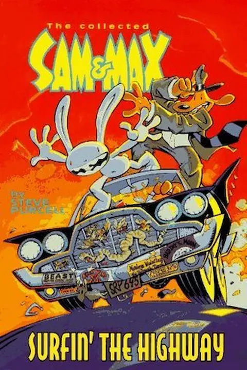

Sam & Max Comics
Sam and Max have a lot of comics, but we are fortunate that there are several ways to look at these comics, but I will list the best and most direct ones.
List of compilations
Sam and Max: Surfin' the highway
This is a compilation of ABSOLUTELY ALL the Sam and Max comics from their inception to the time the book was created, it contains the 4 previous comic books, additional material, deleted and variations, all in the highest possible quality and even commentary from the author, Steve Purcell. Everyone who reads Sam and Max comics recommends this compilation book which is available in digital and physical. You can even find it on some sites for free in a public way.
Sam and Max: The big sleep
The only comic that doesn't always appear in the Surfin' the highway compilation, this one was created after a long time in which Steve didn't create any comics for Sam and Max, and they were basically revived for the new game that was being developed by Tell Tale Games, which was to become Sam and Max Save The World. It's a comic of only 12 pages, but because it's so short and easy to find you could see it without problems with a little search on the web.